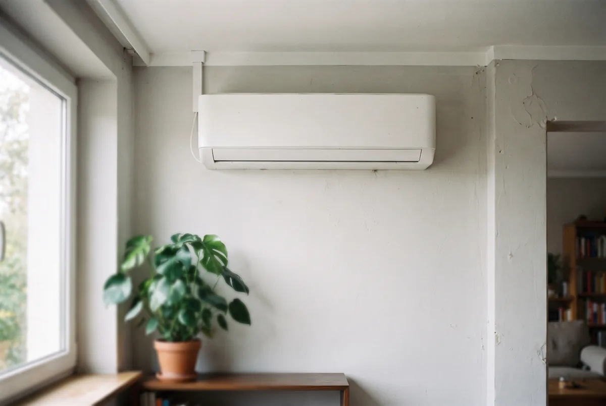
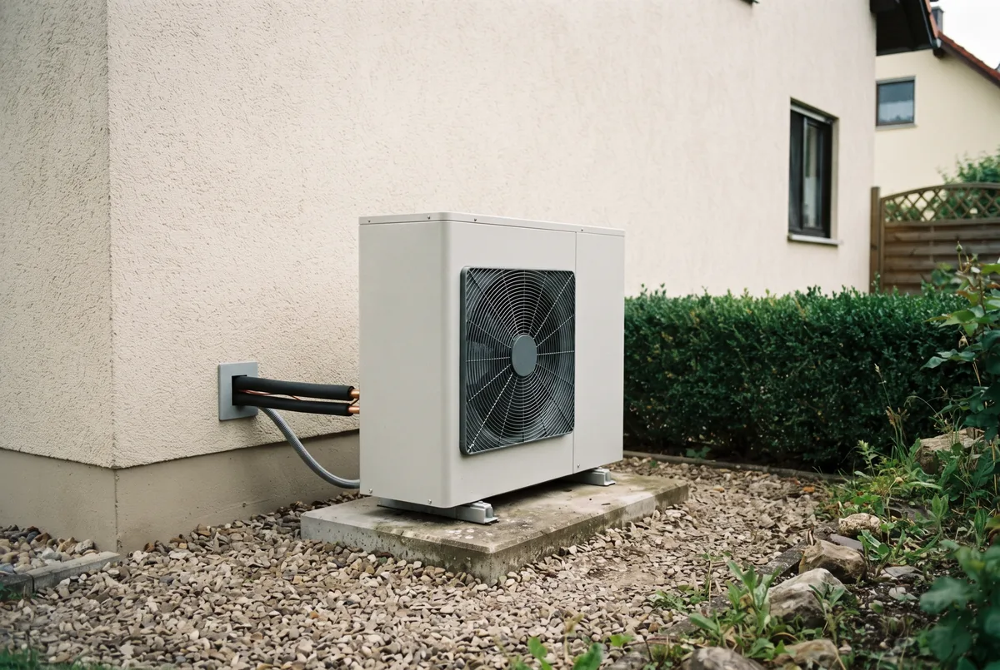
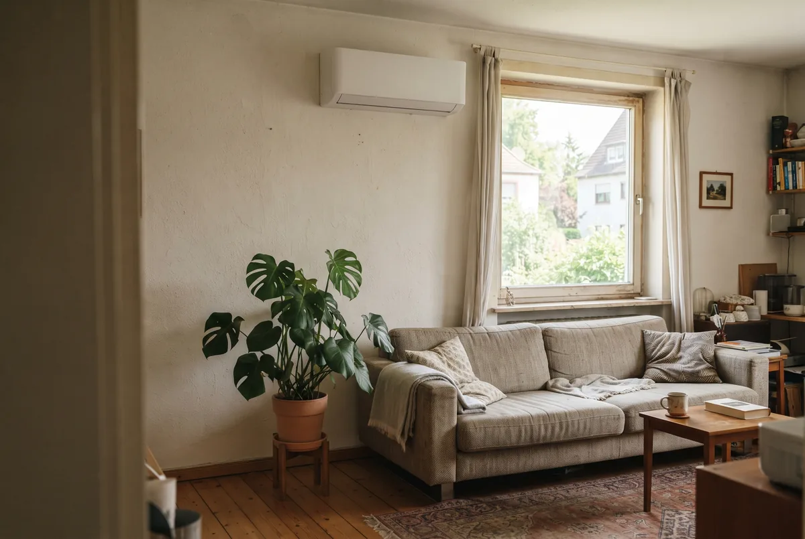

Inhaltsverzeichnis
- Warum die Klimaanlage plötzlich zum Förderthema wird
- Klimaanlage oder Luft-Luft-Wärmepumpe – wo der Förderunterschied entsteht
- Was für Privathaushalte nicht gefördert wird
- Der richtige Fördertopf: KfW 458
- Wie hoch die Förderung ausfällt
- Technische Voraussetzungen, die das Gerät erfüllen muss
- Der Antragsweg Schritt für Schritt
- Rechenbeispiel – Investition, Förderung, Eigenanteil
- Heizen und kühlen mit einem Gerät – die Vorbehalte im Faktencheck
- Fazit und nächster Schritt
- Häufige Fragen
Das Wichtigste in Kürze
- Der Unterschied liegt in der Funktion: Ein reines Kühlgerät wird für Privathaushalte nicht bezuschusst. Ein Gerät, das heizt und zusätzlich kühlt, gilt als Luft-Luft-Wärmepumpe und ist förderfähig.
- Genauso gefördert wie jede Wärmepumpe: Die Luft-Luft-Wärmepumpe läuft über die KfW-Heizungsförderung 458 – vorausgesetzt, sie dient als Heizung des Gebäudes.
- Bis zu 22.400 Euro Zuschuss: 30 Prozent Grundförderung für alle, für Selbstnutzer zusätzlich ein Klimageschwindigkeits- und ein einkommensabhängiger Bonus, gedeckelt bei 80 Prozent von 28.000 Euro förderfähigen Kosten.
- Reihenfolge entscheidet: Wer vor der Antragstellung mit dem Einbau beginnt, verliert die Förderung. Erst Angebot prüfen, dann Vertrag mit aufschiebender Bedingung, dann Antrag, dann Zusage abwarten.
- Nicht jedes Gerät zählt: Es muss auf der BAFA-Liste stehen, die SCOP-Mindestwerte erreichen und den verschärften Schallschutz einhalten.
- Alle Förderangaben: Stand 15. Juli 2026, ohne Gewähr – Details in der Hinweisbox am Ende des Beitrags.
Warum die Klimaanlage plötzlich zum Förderthema wird
Noch vor wenigen Jahren war das aktive Kühlen der eigenen vier Wände in Deutschland ein Randthema. Das hat sich verschoben. Mit den heißer werdenden Sommern steigt laut Marktbeobachtungen die Nachfrage nach Splitgeräten spürbar, und viele Haushalte fragen sich zum ersten Mal, ob sich der Staat an den Kosten beteiligt. Genau hier beginnt die Verwirrung – denn die Antwort lautet weder klar Ja noch klar Nein.
Der Grund ist ein Perspektivwechsel in der Förderlogik. Der Bund fördert keine Kühlung, sondern das Heizen mit erneuerbarer Energie. Ein Gerät, das nur Wärme aus dem Raum schafft, passt nicht in dieses Raster. Ein Gerät, das im Winter heizt und im Sommer dieselbe Technik umkehrt, um zu kühlen, dagegen schon. Damit rückt eine Bauart in den Vordergrund, die viele gar nicht als Klimaanlage wahrnehmen: die reversible Luft-Luft-Wärmepumpe.
Für Sie als Eigentümer bedeutet das eine gute Nachricht mit Bedingung. Die gute Nachricht: Wenn Sie ohnehin über einen Heizungstausch nachdenken, können Sie Heizen und Kühlen in einem geförderten System zusammenführen. Die Bedingung: Das Gerät muss die Heizungsaufgabe wirklich übernehmen und eine Reihe technischer Anforderungen erfüllen. Wer nur ein Zimmer herunterkühlen will, während im Keller die Gasheizung weiterläuft, fällt aus der Förderung heraus.
In diesem Leitfaden trennen wir deshalb sauber zwischen dem, was gefördert wird, und dem, was nicht – und zeigen, wie Sie die Grenze zu Ihren Gunsten nutzen, ohne sich Zahlen schönzurechnen.
Klimaanlage oder Luft-Luft-Wärmepumpe – wo der Förderunterschied entsteht
Technisch sind die Übergänge fließend, und genau das führt zu Missverständnissen. Ein modernes Split-Klimagerät und eine Luft-Luft-Wärmepumpe stecken oft im selben Gehäuse: eine Außeneinheit, eine oder mehrere Inneneinheiten, verbunden über einen Kältekreis. Im Kühlbetrieb entzieht die Inneneinheit dem Raum Wärme und gibt sie draußen ab. Kehrt das Gerät den Kreislauf um, entzieht es der Außenluft Wärme und gibt sie innen ab – dann heizt es. Ein reversibles Gerät kann beides.
Für die Förderung zählt nicht, wie der Hersteller das Produkt nennt, sondern welche Aufgabe es im Gebäude übernimmt. Die Förderrichtlinie kennt keine geförderte Klimaanlage, aber eine geförderte Luft-Luft-Wärmepumpe. Der Unterschied entsteht an einer einzigen Bedingung: Das Gerät muss als Heizung des Gebäudes dienen und den überwiegenden Teil des Wärmebedarfs decken. Erfüllt eine reversible Split-Anlage das, ist sie eine Wärmepumpe im Sinne der Förderung – und wird genauso behandelt wie eine Luft-Wasser-Wärmepumpe.
Das ist der zentrale Hebel dieses Artikels: Aus der Kühlfrage wird eine Heizungsfrage. Wer die Anlage von vornherein als Heizsystem plant und dimensioniert, hält sich die Förderung offen. Wer sie als reine Sommerhilfe kauft, verzichtet auf den Zuschuss – oft ohne es zu wissen. Ob die Luft-Luft-Technik überhaupt zu Ihrem Gebäude passt, hängt an Heizlast, Dämmstand und Raumaufteilung, nicht am Baujahr allein.
Unser Tipp: Luft-Luft oder Luft-Wasser im Altbau: welches System wann die bessere Wahl ist.

Was für Privathaushalte nicht gefördert wird
Bevor es um das Geld geht, lohnt der Blick auf die Sackgassen – denn hier verliert man am meisten Zeit. Für Privathaushalte gibt es mehrere Wege, die trotz gegenteiliger Werbeversprechen ins Leere führen.
Das mobile Monoblock-Gerät mit Abluftschlauch am gekippten Fenster ist nicht förderfähig. Es dient nicht als Gebäudeheizung, steht nicht auf der Liste förderfähiger Wärmepumpen und arbeitet zudem ineffizient, weil durch das gekippte Fenster permanent warme Außenluft nachströmt. Auch das reine Kühl-Splitgerät ohne Heizfunktion fällt heraus: Es kann die Bedingung, als Heizung zu dienen, technisch gar nicht erfüllen.
Häufig wird die gewerbliche BAFA-Richtlinie für Kälte- und Klimaanlagen als vermeintlicher Privat-Weg genannt. Das ist irreführend. Dieses Programm richtet sich an Unternehmen und Nichtwohngebäude, schließt Privatpersonen aus und läuft zum Ende des Jahres 2026 aus. Als Weg für Ihr Einfamilienhaus taugt es nicht.
Es bleibt für Privathaushalte also genau ein geförderter Pfad: die reversible Luft-Luft-Wärmepumpe, die heizt und zusätzlich kühlt. Alles andere zahlen Sie voll aus eigener Tasche. Diese Klarheit ist kein Nachteil, sondern eine Entscheidungshilfe – sie verhindert, dass Sie Monate mit dem falschen Fördertopf verlieren.
Unser Tipp: Was ein mobiles Klimagerät im Sommer wirklich an Strom kostet – mit Rechnung statt Bauchgefühl.
Der richtige Fördertopf: KfW 458 (Heizungsförderung Wohngebäude)
Der geförderte Weg für die Luft-Luft-Wärmepumpe führt über die KfW und ihr Programm 458, die Heizungsförderung für Wohngebäude innerhalb der Bundesförderung für effiziente Gebäude. Wichtig ist die Abgrenzung zu anderen Töpfen: Sonnenschutz, Dämmung oder Fenster laufen als Einzelmaßnahmen über das BAFA. Der Austausch der Heizung – und dazu zählt die Luft-Luft-Wärmepumpe, wenn sie das Gebäude beheizt – läuft dagegen über die KfW.
Zwei Grundbedingungen stehen am Anfang. Erstens gilt das Programm für Bestandsgebäude, in der Regel ab einem gewissen Alter; Neubauten sind ausgeschlossen. Zweitens muss die neue Wärmepumpe die bestehende Heizung ersetzen und die Wärmeversorgung übernehmen. Ein Zusatzgerät neben der weiterlaufenden Öl- oder Gasheizung erfüllt das nicht.
Der zweite unverzichtbare Baustein ist der Energieeffizienz-Experte. Ohne seine Bestätigung zur Ausführung (BzA) nimmt die KfW keinen Antrag an. Er prüft, ob das geplante Gerät und die Ausführung die technischen Förderkriterien erfüllen, und stellt den Nachweis aus, der dem Antrag zugrunde liegt. Diese Rolle können Sie nicht überspringen und nicht selbst übernehmen.
Für Sie heißt das: Der Fördertopf ist eindeutig, die Spielregeln aber sind streng. Ob Ihr Vorhaben hineinpasst, entscheidet sich nicht erst beim Antrag, sondern schon bei der Planung – bei der Frage, ob die Anlage die Heizlast Ihres Hauses tatsächlich deckt. Genau dort setzen wir mit der raumweisen Heizlastberechnung an, bevor überhaupt ein Gerät ausgewählt wird.
Wie hoch die Förderung ausfällt
Für Anträge ab dem 21. Juli 2026 gelten die reformierten Konditionen der Heizungsförderung. Sie setzen sich aus einem Grundbetrag und mehreren Boni zusammen, die sich addieren können.
- Grundförderung: 30 Prozent der förderfähigen Kosten erhält jeder Antragsteller, unabhängig von Einkommen und Selbstnutzung.
- Klimageschwindigkeitsbonus: Selbstnutzer, die eine funktionstüchtige alte Heizung ersetzen, erhalten zusätzlich 16 Prozent. Dieser Bonus ist degressiv angelegt und sinkt ab Februar 2027 schrittweise ab.
- Einkommensabhängiger Bonus: Selbstnutzer bekommen je nach zu versteuerndem Haushaltseinkommen zusätzlich 40, 30 oder 10 Prozent. Ein Familienzuschlag senkt das anzusetzende Einkommen bei mindestens einem minderjährigen Kind einmalig um 10.000 Euro.
Zwei Grenzen deckeln das Ergebnis. Die förderfähigen Kosten der ersten Wohneinheit sind auf 28.000 Euro begrenzt – was darüber liegt, zählt nicht mit. Und die Förderquote ist auf höchstens 80 Prozent gedeckelt, solange das anzusetzende zu versteuernde Haushaltseinkommen 30.000 Euro nicht übersteigt (mit mindestens einem minderjährigen Kind bis 40.000 Euro, weil der Familienzuschlag 10.000 Euro abzieht); darüber liegt die Grenze bei 70 Prozent. Aus dem 80-Prozent-Deckel auf 28.000 Euro ergibt sich der maximale Zuschuss von 22.400 Euro für die erste Wohneinheit.
In der Praxis erreicht kaum jemand alle Boni gleichzeitig, und welcher Satz für Sie gilt, hängt an Selbstnutzung, Einkommen und dem genauen Antragsdatum. Wir prüfen die für Ihren Fall geltende Kombination individuell und tagesaktuell, statt mit dem theoretischen Maximum zu werben.
Wollen Sie wissen, was bei Ihnen wirklich gefördert wird?
Wir prüfen, ob eine Luft-Luft-Wärmepumpe zu Ihrem Gebäude passt, rechnen Ihre konkrete Förderquote durch und sehen uns Ihr Angebot an, bevor Sie unterschreiben.
Kostenlose ErsteinschätzungTechnische Voraussetzungen, die das Gerät erfüllen muss
Die Höhe der Förderung nützt wenig, wenn das Gerät die technischen Hürden reißt. Und die sind mit der jüngsten Reform eher strenger geworden. Vier Punkte entscheiden, ob eine Luft-Luft-Wärmepumpe förderfähig ist.
Erstens muss das konkrete Modell auf der BAFA-Liste förderfähiger Wärmepumpen geführt sein. Diese Liste im Wärmeerzeuger-Portal ist die maßgebliche Referenz – steht Ihr Wunschgerät nicht darauf, gibt es keine Förderung, unabhängig davon, wie gut es sonst ist. Zweitens muss die Anlage als Heizung des Gebäudes dienen und den überwiegenden Teil des Wärmebedarfs decken. Ein Parallelbetrieb neben einer fossilen Heizung erfüllt diese Bedingung nach unserer Einschätzung nicht.
Drittens gelten SCOP-Mindestwerte. Der saisonale Leistungsfaktor beschreibt, wie viel Wärme das Gerät über die Heizperiode pro eingesetzter Kilowattstunde Strom liefert. Die Förderrichtlinie verlangt hier Mindestwerte, die viele einfache Kühl-Splitgeräte im realen Heizbetrieb nicht erreichen – ein häufiger Grund, warum ein vermeintliches Schnäppchen am Ende nicht förderfähig ist. Viertens gilt ein verschärfter Schallschutz: Das Außengerät muss deutlich unter dem jeweiligen Grenzwert liegen, nach den aktuellen Vorgaben mindestens rund 10 Dezibel darunter. Das schließt laute Billiggeräte praktisch aus.
Diese Anforderungen sind kein Selbstzweck, sondern der Grund, warum die Geräteauswahl an den Anfang gehört und nicht ans Ende. Wir gleichen das in Aussicht genommene Gerät mit der Liste und den Kriterien ab, bevor ein Angebot unterschrieben wird – damit die Förderfähigkeit nicht erst im Antrag auffällt, wenn es zu spät ist.

Der Antragsweg Schritt für Schritt
Der teuerste Fehler bei der Heizungsförderung ist kein technischer, sondern ein zeitlicher: Wer vor der Antragstellung mit dem Vorhaben beginnt, verliert den Zuschuss. Förderschädlich ist der Maßnahmenbeginn vor der Antragstellung – nicht der Vertragsabschluss an sich, solange er richtig gestaltet ist. Deshalb kommt es auf die Reihenfolge an:
- Angebot bei einem Fachbetrieb einholen.
- Angebot vor der Unterschrift auf Förderfähigkeit prüfen lassen – Positionen, technische Anforderungen, Dimensionierung.
- Liefer- und Leistungsvertrag mit aufschiebender Bedingung unterschreiben, also unter dem Vorbehalt der Förderzusage.
- Bestätigung zur Ausführung (BzA) durch den Energieeffizienz-Experten erstellen lassen.
- Antrag im KfW-Portal stellen.
- Zusage abwarten.
- Erst dann mit der Umsetzung beginnen.
Der entscheidende Denkfehler, den man oft hört, lautet „Antrag vor Auftragserteilung". Das ist überholt. Sie dürfen den Vertrag durchaus vorher abschließen – aber nur mit einer aufschiebenden Bedingung, die ihn an die Förderzusage koppelt. Und Sie dürfen mit den Arbeiten nicht beginnen, bevor der Antrag gestellt ist. Genau zwischen Schritt 5 und Schritt 7 liegt die Zone, in der Fördergeld verloren geht.
An zwei Stellen setzen wir konkret an: Wir prüfen Ihr Angebot vor der Vertragsunterschrift auf Förderfähigkeit, und wir übernehmen die raumweise Heizlastberechnung, damit die Anlage nicht zu groß und nicht zu klein ausgelegt wird. Beides entscheidet darüber, ob der Antrag durchgeht und ob die Anlage später sparsam läuft. Achten Sie bei mehreren Angeboten darauf, dass sie denselben Leistungsumfang abbilden – sonst vergleichen Sie Preise, die nicht vergleichbar sind.
Rechenbeispiel – Investition, Förderung, Eigenanteil
Wie sich die Förderung auf den Geldbeutel auswirkt, zeigt ein Beispiel. Die Investition für eine Luft-Luft-Wärmepumpe, die ein Einfamilienhaus beheizt, liegt je nach Anzahl der Innengeräte und baulichem Aufwand grob zwischen 10.000 und 20.000 Euro – die Spanne ist groß, und die folgenden Zahlen sind ausdrücklich eine Orientierung, kein Angebot. Wir rechnen mit einer beispielhaften Investition von 18.000 Euro, die vollständig unter dem Kostendeckel von 28.000 Euro liegt und damit in voller Höhe förderfähig ist.
| Konstellation | Förderquote | Zuschuss | Eigenanteil |
|---|---|---|---|
| Nur Grundförderung | 30 % | 5.400 € | 12.600 € |
| Selbstnutzer mit Klimageschwindigkeitsbonus | 46 % | 8.280 € | 9.720 € |
| Selbstnutzer, bis zum 80-Prozent-Deckel | 80 % | 14.400 € | 3.600 € |
Die drei Zeilen zeigen die Bandbreite: Wer die Anlage vermietet oder ein höheres Einkommen hat, landet bei der Grundförderung. Selbstnutzer, die eine alte Heizung ersetzen, kommen mit dem Klimageschwindigkeitsbonus auf 46 Prozent. Wer zusätzlich den einkommensabhängigen Bonus voll ausschöpft, stößt an den Deckel von 80 Prozent – bei 18.000 Euro Investition also 14.400 Euro Zuschuss. Bei einer teureren Anlage von beispielsweise 28.000 Euro wären es an diesem Deckel die maximalen 22.400 Euro.
Wichtig ist die Einordnung: Diese Werte sind Rechenbeispiele, keine Zusage. Ob und in welcher Höhe die Boni bei Ihnen zusammenkommen, hängt an Selbstnutzung, Einkommen, Familiensituation und Antragsdatum. Wir sichern das für Ihren konkreten Fall ab, bevor Sie sich auf eine Zahl verlassen.

Heizen und kühlen mit einem Gerät – die Vorbehalte im Faktencheck
Gegen die Luft-Luft-Wärmepumpe kursieren einige Vorbehalte. Ein sachlicher Blick ordnet sie ein, ohne zu beschönigen.
„Ein Klimagerät kann doch keine ernsthafte Heizung sein." Doch, wenn es dafür ausgelegt ist. Eine reversible Luft-Luft-Wärmepumpe arbeitet im Heizbetrieb nach demselben Prinzip wie jede andere Wärmepumpe. Entscheidend ist, dass die Anlage die Heizlast des Gebäudes deckt – deshalb steht am Anfang die Heizlastberechnung. In gut gedämmten Häusern und Wohnungen ist das gut machbar; in einem unsanierten Altbau mit hoher Heizlast stößt die Technik eher an Grenzen.
„Die Luft zieht und trocknet aus." Das kann bei falsch eingestellten oder unterdimensionierten Geräten passieren, ist aber vermeidbar. Richtig platzierte Innengeräte und eine passende Auslegung verteilen die Luft, ohne dass ein permanenter Zug entsteht. Auch hier hängt der Komfort an der Planung, nicht an der Bauart.
„Der Stromverbrauch im Kühlbetrieb frisst die Ersparnis." Kühlen kostet Strom, das lässt sich nicht wegdiskutieren. Aber die Kühlung ist der Zusatznutzen, nicht der Zweck der Förderung. Wer das Gebäude vorher gut gegen sommerliche Hitze schützt, muss weniger kühlen – deshalb gehören baulicher Hitzeschutz und Kühltechnik zusammen. Wie aktives und passives Kühlen mit einer Wärmepumpe technisch funktioniert und was es kostet, ordnen wir separat ein.
„Das Außengerät ist zu laut." Der verschärfte Schallschutz der Förderung wirkt genau gegen diesen Punkt: Förderfähige Geräte müssen deutlich leiser sein als der Grenzwert. Die laute Billigware fällt damit ohnehin aus der Förderung.
Unser Tipp: Wärmepumpe zum Kühlen: wie aktive und passive Kühlung funktionieren und was sie leisten.
Fazit und nächster Schritt
Die Frage, ob eine Klimaanlage gefördert wird, hat eine klare Antwort, sobald man sie richtig stellt. Ein reines Kühlgerät bekommt für Privathaushalte nichts. Eine reversible Luft-Luft-Wärmepumpe, die das Gebäude beheizt und zusätzlich kühlt, wird über die KfW-Heizungsförderung 458 genauso behandelt wie jede andere Wärmepumpe – mit 30 Prozent Grundförderung und für Selbstnutzer einer Reihe von Boni, gedeckelt bei 80 Prozent von 28.000 Euro und damit bis zu 22.400 Euro Zuschuss.
Der Weg dorthin ist an Bedingungen geknüpft, die man nicht umgehen kann: Das Gerät muss auf der Liste stehen, die technischen Werte erfüllen und als Heizung dienen. Und die Reihenfolge aus Angebotsprüfung, Vertrag mit aufschiebender Bedingung, Antrag und Zusage muss sitzen, sonst verfällt das Geld. Keine dieser Hürden ist unüberwindbar – aber jede einzelne kostet den Zuschuss, wenn man sie übersieht.
Der sinnvolle nächste Schritt ist deshalb nicht der Kauf des erstbesten Splitgeräts, sondern die Frage, ob eine Luft-Luft-Wärmepumpe zu Ihrem Gebäude passt und welche Förderquote für Sie realistisch ist. Genau das schauen wir uns mit Ihnen an – mit einer raumweisen Heizlastberechnung und einer Prüfung Ihres Angebots, bevor Sie unterschreiben, nicht danach.
Unser Tipp: Wohnung kühlen ohne Klimaanlage: alle Maßnahmen von 0 Euro bis zur geförderten Sanierung im Überblick.
Häufige Fragen
Wird eine Klimaanlage vom Staat gefördert?
Ein reines Kühlgerät wird für Privathaushalte nicht gefördert. Weder ein mobiler Monoblock noch ein Splitgerät, das ausschließlich kühlt, erhält einen Zuschuss über die Bundesförderung für effiziente Gebäude. Gefördert wird nur, wenn das Gerät zugleich heizt und als Heizung des Gebäudes dient. Eine reversible Split-Anlage gilt dann als Luft-Luft-Wärmepumpe und läuft über die KfW-Heizungsförderung 458. Entscheidend ist also nicht die Bezeichnung auf dem Karton, sondern die Funktion: Wer heizt, kann fördern lassen, wer nur kühlt, nicht.
Welche Klimaanlage ist förderfähig?
Förderfähig ist eine reversible Luft-Luft-Wärmepumpe, also ein Split- oder Multi-Split-System, das die bestehende Heizung ersetzt und den überwiegenden Teil des Wärmebedarfs deckt. Das konkrete Gerät muss auf der BAFA-Liste förderfähiger Wärmepumpen geführt sein, die geforderten SCOP-Mindestwerte erreichen und den verschärften Schallschutz einhalten. Ein Parallelbetrieb neben einer weiterlaufenden Öl- oder Gasheizung erfüllt die Bedingung in der Regel nicht. Ob Ihr Wunschmodell die Kriterien erfüllt, lässt sich vorab prüfen – das übernehmen wir für Sie, bevor Sie einen Vertrag unterschreiben.
Wie viel Förderung gibt es für eine Luft-Luft-Wärmepumpe?
Für Anträge ab dem 21. Juli 2026 gilt: 30 Prozent Grundförderung erhält jeder. Selbstnutzer können zusätzlich einen Klimageschwindigkeitsbonus von 16 Prozent (degressiv ab Februar 2027) und einen einkommensabhängigen Bonus von 40, 30 oder 10 Prozent bekommen, gestaffelt nach zu versteuerndem Haushaltseinkommen. Die förderfähigen Kosten der ersten Wohneinheit sind auf 28.000 Euro begrenzt, die Förderquote auf höchstens 80 Prozent – daraus ergibt sich ein maximaler Zuschuss von 22.400 Euro. Welche Boni für Ihren Fall zusammenkommen, hängt an Selbstnutzung, Einkommen und Antragsdatum.
Muss die Klimaanlage die einzige Heizung im Haus sein?
Die Luft-Luft-Wärmepumpe muss die Heizungsaufgabe des Gebäudes übernehmen und den überwiegenden Teil des Wärmebedarfs decken. Ein Gerät, das nur ein einzelnes Zimmer temperiert, während im Keller die Gasheizung weiterläuft, ist nach unserer Einschätzung nicht förderfähig. Für kleinere, gut gedämmte Häuser oder Wohnungen kann ein Multi-Split-System diese Rolle übernehmen. Ob Ihr Gebäude sich dafür eignet, entscheidet sich an der Heizlast – deshalb steht am Anfang eine raumweise Heizlastberechnung und nicht der Gerätekatalog.
Wird eine mobile Klimaanlage oder ein Monoblock gefördert?
Nein. Mobile Monoblock-Geräte mit Abluftschlauch am gekippten Fenster und reine Kühl-Splitgeräte ohne Heizfunktion sind für Privathaushalte nicht förderfähig. Sie dienen nicht als Gebäudeheizung und stehen nicht auf der BAFA-Liste förderfähiger Wärmepumpen. Die gewerbliche BAFA-Richtlinie für Kälte- und Klimaanlagen schließt Privatpersonen aus und läuft zudem Ende 2026 aus. Für Privathaushalte bleibt der einzig geförderte Weg die Luft-Luft-Wärmepumpe, die heizt und zusätzlich kühlt.
Stand der Angaben (15. Juli 2026): Bundestag und Bundesrat haben am 10. Juli 2026 das neue Gebäudemodernisierungsgesetz (GModG) beschlossen; das Gesetz ist jedoch noch nicht verkündet. Die reformierten KfW-Förderbedingungen gelten laut BMWE und KfW für neue Anträge ab dem 21. Juli 2026, die geänderte Förderrichtlinie ist zum Redaktionsschluss noch nicht im Bundesanzeiger veröffentlicht – alle Zahlen geben den aktuellen Stand des Wissens wieder, ohne Gewähr. Die Förderung steht außerdem unter dem Vorbehalt verfügbarer Bundesmittel; ein Rechtsanspruch besteht nicht. Welche Konditionen für Ihr Vorhaben konkret gelten, prüfen wir gern tagesaktuell für Sie.